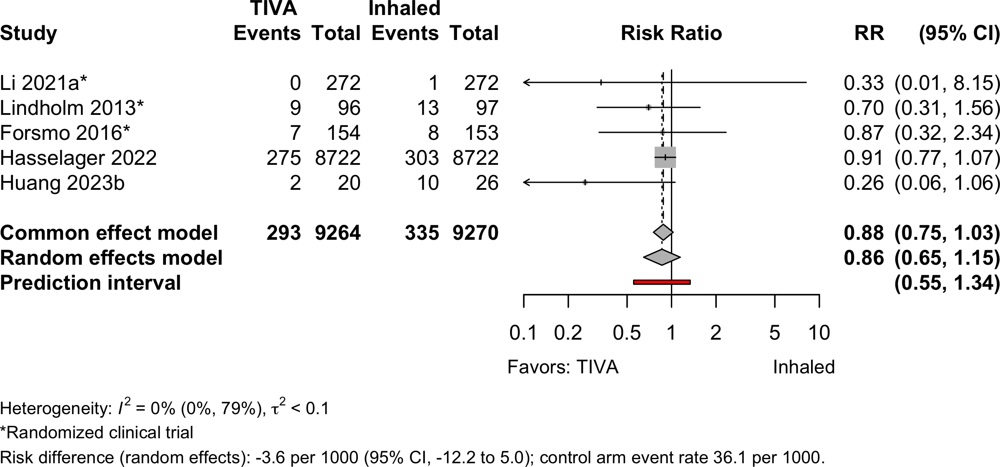
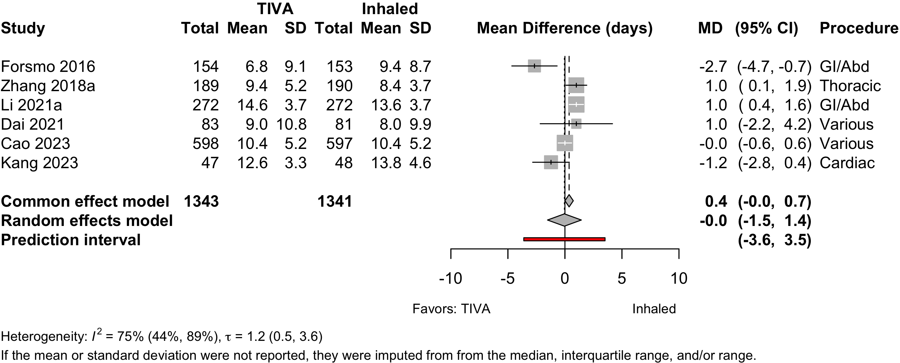
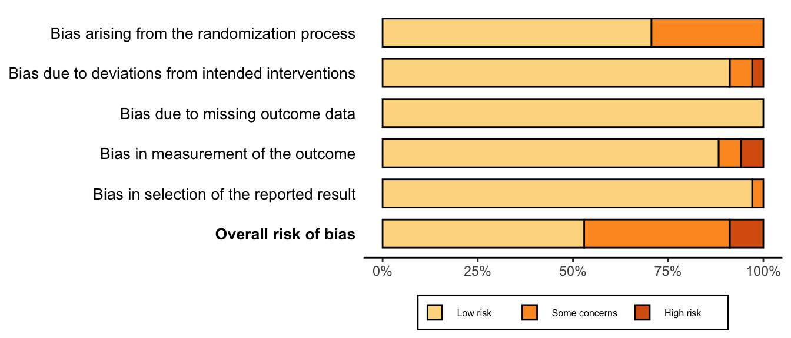

| Outcome | RCT | NRSI* | Regional | General | GRADE† | Effect | Estimate (95% CI) |
|---|---|---|---|---|---|---|---|
| N (Total) | N (Total) | ||||||
| Delirium | 6 | 95 (795) | 120 (793) | ⨁⨁◯◯ |
RR | 0.81 (0.59–1.12) | |
| Delayed neurocognitive recovery | 6 | 131 (850) | 206 (900) | ⨁⨁⨁◯ |
RR | 0.70 (0.52–0.93) | |
| Postoperative neurocognitive disorder | 2 | 29 (203) | 19 (153) | ⨁◯◯◯ |
RR | 1.15 (0.68–1.95) | |
| Complications | 8 | 5 | ⨁⨁◯◯ |
See below | |||
| Patient satisfaction | 3 | 90 (109) | 82 (141) | ⨁⨁◯◯ |
RR | 1.39 (1.19–1.63)‡ | |
| Length of stay (days) | 4 | (698) | (696) | ⨁◯◯◯ |
MD | 0.2 (-1.6 to 1.9) | |
| Discharged to institution | none | none | |||||
| Mortality (in-hospital and 30-day) | 5 | 11 (566) | 8 (565) | ⨁⨁◯◯ |
RR | 1.16 (0.46–2.92) | |
| RCT: randomized clinical trial; NRSI: nonrandomized studies of interventions; GRADE: Grades of Recommendation, Assessment, Development, and Evaluation; RR: risk ratio; RD: risk difference; OR: odds ratio; MD: mean difference. | |||||||
| * Results from nonrandomized designed shown only when evidence not available from randomized trials. | |||||||
| † Very low: ⨁◯◯◯; Low: ⨁⨁◯◯; Moderate: ⨁⨁⨁◯; High: ⨁⨁⨁⨁. | |||||||
| ‡ Comparing higher/highest category or categories with lower ones. | |||||||
TIVA versus Inhaled Anesthesia
Key Question
Among older patients undergoing surgery with general anesthesia, does the use of intravenous agents for maintenance of anesthesia improve postoperative outcomes compared with inhaled agents?
Balance Tables
Benefits, harms, and strength of evidence (GRADE) for TIVA versus inhaled anesthesia.
Included complications and strength of evidence (GRADE) for TIVA versus inhaled anesthesia.
| Outcome | RCT | NRSI | Regional | General | GRADE* | Effect | Estimate (95% CI) |
|---|---|---|---|---|---|---|---|
| N (Total) | N (Total) | ||||||
| Myocardial infarction | 2 | 2 | 2,039 (142,521) | 6,717 (427,651) | ⨁◯◯◯ |
OR | 0.90 (0.87–0.94) |
| RD/1000 | -1.9 (-2.7 to -1.2)† | ||||||
| Bradycardia | 3 | 1 | 19 (385) | 16 (385) | ⨁◯◯◯ |
RR | 1.47 (0.50–4.29) |
| RD/1000 | 1.2 (-2.8 to 5.1) | ||||||
| Cardiac arrest | 1 | 2 (1,374) | 0 (1,202) | ⨁◯◯◯ |
RD/1000 | 0.1% (-0.1 to 0.4) | |
| Acute kidney injury | 1 | 3 | 820 (144,658) | 2,277 (430,155) | ⨁◯◯◯ |
OR | 1.00 ( 0.92–1.08) |
| RD/1000 | -0.02 (-0.43 to 0.42) | ||||||
| Pneumonia | 3 | 16 (522) | 22 (522) | ⨁⨁◯◯ |
OR | 0.72 (0.37–1.40) | |
| Pulmonary congestion/edema | 2 | 0 (143,939) | 3 (428,897) | ⨁◯◯◯ |
no events one study; in second difference undetected | ||
| Pulmonary embolism | 1 | 2 | 189 (144,093) | 432 (429,050) | ⨁◯◯◯ |
OR | 1.33 (0.93–1.90) |
| Respiratory failure | 1 | 1 | 420 (142,565) | 1,487 (427,695) | ⨁◯◯◯ |
few events one study; in second difference detected | |
| RCT: randomized clinical trial; GRADE: Grades of Recommendation, Assessment, Development, and Evaluation; RR: risk ratio; MD: mean difference. | |||||||
| * Very low: ⨁◯◯◯; Low: ⨁⨁◯◯; Moderate: ⨁⨁⨁◯; High: ⨁⨁⨁⨁. | |||||||
| † Approximate based on the event rate in the inhaled anesthetic arms and the risk ratio calculated from the odds ratio. | |||||||
Outcome Importance
Table 1. Rankings of the 5 most important outcomes (11 respondents).
Outcomes Reported
Table 2. Dichotomous or count outcomes.
| Outcome | RCT, N = 27 | NR Trial, N = 1 | Prosp Coh, N = 3 | Retro Coh, N = 9 |
|---|---|---|---|---|
| ADL | — | — | — | — |
| Complications | 9 (33%) | 1 (100%) | — | 8 (89%) |
| DNCR/PND | 9 (33%) | 1 (100%) | 2 (67%) | — |
| Delirium | 6 (22%) | — | 1 (33%) | 2 (22%) |
| Delirium duration | — | — | — | — |
| Discharge location | — | — | — | — |
| Mortality | 5 (19%) | — | — | 5 (56%) |
| Opioid use | 1 (3.7%) | — | — | — |
| Pain | 1 (3.7%) | — | — | — |
| QoR | — | — | — | — |
| Readmission | 1 (3.7%) | — | — | — |
| Satisfaction | 3 (11%) | — | — | — |
| ADL: activities of daily living; NCR: neurocognitive recovery; POCD: postoperative neurocognitive disorder; QoR: quality of recovery; RCT: randomized clinical trial; NR Trial: non-randomized trial; Prosp Coh: prospective cohort; Retro Coh: retrospective cohort. | ||||
Table 3. Continuous outcomes.
| Outcome | RCT, N = 27 | NR Trial, N = 1 | Prosp Coh, N = 3 | Retro Coh, N = 9 |
|---|---|---|---|---|
| Delirium duration | — | — | — | — |
| Length of stay | 5 (19%) | — | — | 3 (33%) |
| Opioid use | 2 (7.4%) | — | — | — |
| RCT: randomized clinical trial; NR Trial: non-randomized trial; Prosp Coh: prospective cohort; Retro Coh: retrospective cohort. | ||||
Table 4. Likert or ordinal outcomes.
| Outcome | RCT, N = 27 | NR Trial, N = 1 | Prosp Coh, N = 3 | Retro Coh, N = 9 |
|---|---|---|---|---|
| ADL | — | — | — | — |
| DNCR/PND | 12 (44%) | 1 (100%) | — | — |
| Delirium | 2 (7.4%) | — | — | — |
| Complications | — | — | — | — |
| Pain | 4 (15%) | — | — | — |
| Quality of life | — | — | — | — |
| QoR | — | — | — | — |
| Satisfaction | — | — | — | — |
| ADL: activities of daily living; NCR: neurocognitive recovery; POCD: postoperative neurocognitive disorder; QoR: quality of recovery; RCT: randomized clinical trial; NR Trial: non-randomized trial; Prosp Coh: prospective cohort; Retro Coh: retrospective cohort. | ||||
Included Studies
Table 5. Number of studies by design.
| Design | Studies |
|---|---|
| Randomized Clinical Trial | 27 |
| Nonrandomized Trial | 1 |
| Prospective Cohort | 3 |
| Retrospective Cohort | 9 |
| Total | 40 |
Design, centers, country, and surgery
Table 6. Study design, enrollment, centers, country, and surgery (see References for citations).
| ID | Study | Centers | Enrolled | Countrya | Surgery |
|---|---|---|---|---|---|
| Randomized Clinical Trial | |||||
| 13719 | 1 | 88 | Turkey | Cardiac | |
| 4033 | 1 | 90 | Chinaa | ENT | |
| 16931 | 1 | 69 | Chinaa | ENT | |
| 15440 | 1 | 60 | Irana | GI/Abdominal | |
| 11652 | 1 | 653 | Norway | GI/Abdominal | |
| 16559 | 1 | 150 | Chinaa | GI/Abdominal | |
| 16572 | 1 | 59 | Japan | GI/Abdominal | |
| 17 | 4 | 544 | Chinaa | GI/Abdominal | |
| 385 | 1 | 50 | Japan | GI/Abdominal | |
| 331 | 1 | 30 | Japan | GI/Abdominal | |
| 16622 | 1 | 220 | Chinaa | GI/Abdominal | |
| 9011 | 1 | 180 | Chinaa | GI/Abdominal|Ortho|ENT | |
| 2794 | 1 | 45 | Ireland | Gyn|Urol | |
| 5915 | 1 | 60 | USA | Headneck | |
| 16557 | 1 | 124 | Germany | Ophtho | |
| 16587 | 1 | 96 | Germany | Ophtho | |
| 285 | 1 | 100 | USA | Ortho | |
| 16726 | 1 | 224 | Chinaa | Spine | |
| 16556 | 1 | 148 | Japan | Thoracic | |
| 150 | 1 | 104 | Chinaa | Thoracic | |
| 10 | 1 | 392 | Chinaa | Thoracic | |
| 376 | 1 | 153 | Italy | Thoracic|Vasc | |
| 16547 | 1 | 100 | Turkey | Urol | |
| 534 | 1 | 2216 | Chinaa | Variousb | |
| 17101 | 14 | 1228 | Chinaa | Variousb | |
| 6506 | 1 | 164 | Chinaa | Variousb | |
| 447 | 1 | 231 | Norway | Vasc | |
| Nonrandomized Trial | |||||
| 13116 | 1 | 265 | Chinaa | Thoracic | |
| Prospective Cohort | |||||
| 17080 | 1 | 76 | USA | General|Spine|Thoracic|Urol | |
| 155 | 1 | 105 | USA | General|Thoracic|Urol | |
| 22 | 1 | 300 | Japan | Ortho | |
| Retrospective Cohort | |||||
| 332 | 1 | 116 | USA | Cardiac | |
| 234 | 3 | 10535 | Denmark | Cardiac | |
| 15331 | 1 | 1934 | South Africa | GI/Abdominal | |
| 14821 | 1 | 265 | Japan | GI/Abdominal | |
| 383 | — | 21899 | Japan | Ortho | |
| 132 | 1 | 3084 | South Korea | Thoracic | |
| 6964 | 1 | 3045 | South Korea | Variousb | |
| 1134 | 1 | 1254 | South Korea | Variousb | |
| 16890 | 1730 | 738600 | Japan | Variousb | |
| GI: gastrointestinal; Ortho: orthopedic; Ent: ear, nose, and throat; Neuro: neurological; Oralmax: oral maxillofacial; Vasc: vascular. | |||||
| a Non very-high Human Development Index country. | |||||
| b Described as various or more than 4 different types of surgery. | |||||
Country Summary
Table 7. Summary of studies by country where conducted.
| N = 40a | |
|---|---|
| Country | |
| China | 13 (33%) |
| Japan | 8 (20%) |
| USA | 5 (13%) |
| South Korea | 3 (7.5%) |
| Germany | 2 (5.0%) |
| Norway | 2 (5.0%) |
| Turkey | 2 (5.0%) |
| Denmark | 1 (2.5%) |
| Iran | 1 (2.5%) |
| Ireland | 1 (2.5%) |
| Italy | 1 (2.5%) |
| South Africa | 1 (2.5%) |
| a n (%) | |
Comparators
Randomized
Table 8. Selected characteristics of randomized clinical trials comparing TIVA with inhaled maintenance anesthesia.
| Study | N | Comparator | ASA | Agea | MMSEa | Inhaled | TIVA | ||||||
|---|---|---|---|---|---|---|---|---|---|---|---|---|---|
| PS | Des | Iso | Sev | Oth | Fen | Pro | Rem | Oth | |||||
| Gastrointestinal/Abdominal | |||||||||||||
| 25 | Inhaled | 12 | 71.0 (7.0) |
✓ | |||||||||
| 25 | TIVA | 12 | 71.0 (8.0) |
● | |||||||||
| 15 | Inhaled | 12 | 70.9 (6.5) |
✓ | |||||||||
| 15 | TIVA | 12 | 71.2 (5.3) |
●b | |||||||||
| 99 | Inhaled | NR | 70.0 (4.3) |
25.0 (1.7) |
✓ | ○ | |||||||
| 101 | TIVA | NR | 69.6 (4.8) |
24.6 (1.7) |
● | ||||||||
| 153 | Inhaled | 123 | 66.0 [19-93] |
✓c | ✓c | ○ | ○ | ||||||
| 154 | TIVA | 123 | 65.0 [23-89] |
● | ● | ||||||||
| 30 | Inhaled | NR | 76.5 (4.5) |
✓ | |||||||||
| 29 | TIVA | NR | 77.3 (4.6) |
● | |||||||||
| 30 | Inhaled | NR | 71.0 (2.6) |
27.3 (1.9) |
✓ | ||||||||
| 30 | TIVA | NR | 73.0 (3.2) |
27.2 (2.4) |
● | ||||||||
| 50 | Inhaled | 23 | 28.9 (1.4) |
✓ | |||||||||
| 50 | Inhaled | 23 | 29.4 (1.9) |
✓ | |||||||||
| 50 | TIVA | 23 | 29.2 (1.5) |
● | |||||||||
| 272 | Inhaled | NR | 65.0 {62-69} |
29 {28-30} |
✓ | ○ | |||||||
| 272 | TIVA | NR | 64.0 {62-68} |
29 {28-30} |
● | ● | |||||||
| Various | |||||||||||||
| 90 | Inhaled | 12 | 71.3 (5.6) |
27.0 (2.7) |
✓ | ||||||||
| 90 | TIVA | 12 | 70.2 (4.3) |
26.0 (2.5) |
● | ||||||||
| 15 | Inhaled | NR | 73.8 [67-86] |
28.0 [25-30] |
✓ | ○ | |||||||
| 15 | TIVA | NR | 72.9 [65-83] |
27.0 [25-30] |
● | ● | |||||||
| 44 | Inhaled | 1234 | 65.0 (11.8) |
✓ | ○ | ||||||||
| 44 | TIVA | 1234 | 64.0 (12.2) |
● | |||||||||
| 1000 | Inhaled | NR | 69.3 (5.1) |
27.4 (1.1) |
✓ | ○ | ○ | ||||||
| 1000 | TIVA | NR | 71.2 (3.8) |
27.2 (1.1) |
● | ● | |||||||
| 81 | Inhaled | 234 | 72.0 (7.0) |
✓ | |||||||||
| 83 | TIVA | 234 | 73.0 (8.0) |
● | ● | ||||||||
| 597 | Inhaled | 123 | 71.0 [65-88] |
28 {26-30} |
✓ | ||||||||
| 598 | TIVA | 123 | 72.0 [65-88] |
28 {26-30} |
● | ||||||||
| Thoracic | |||||||||||||
| 72 | Inhaled | 123 | 72.0 {63-72} |
30 {28-30} |
✓ | ||||||||
| 72 | TIVA | 123 | 69.0 {63-73} |
30 {29-30} |
● | ||||||||
| 190 | Inhaled | 123 | 72.4 (5.6) |
28.3 (1.7) |
✓ | ||||||||
| 189 | TIVA | 123 | 72.8 (5.5) |
28.2 (1.7) |
● | ||||||||
| 52 | Inhaled | NR | 28.6 (1.0) |
✓ | |||||||||
| 52 | TIVA | NR | 28.8 (1.0) |
● | |||||||||
| Ophthalmologic | |||||||||||||
| 62 | Inhaled | 123 | 76.0 (6.0) |
✓ | ✓ | ○ | |||||||
| 62 | TIVA | 123 | 77.0 (6.0) |
● | ● | ||||||||
| 32 | Inhaled | 123 | 77.0 (7.0) |
✓d | |||||||||
| 32 | Inhaled | 123 | 76.0 (6.0) |
✓ | ○ | ||||||||
| 32 | TIVA | 123 | 74.0 (7.0) |
● | |||||||||
| Otolaryngological | |||||||||||||
| 30 | Inhaled | NR | 68.0 (3.0) |
27.8 (1.8) |
✓ | ||||||||
| 30 | TIVA | NR | 68.0 (2.0) |
28.6 (1.1) |
● | ||||||||
| 31 | Inhaled | 12 | 66.7 (7.2) |
27 {26-29} |
✓ | ○ | |||||||
| 32 | TIVA | 12 | 63.9 (5.3) |
28 {26-28} |
● | ● | |||||||
| Orthopedic | |||||||||||||
| 45 | Inhaled | 123 | 69.8 (4.3) |
✓ | ○ | ○ | |||||||
| 45 | TIVA | 123 | 70.6 (5.0) |
● | |||||||||
| Cardiac | |||||||||||||
| 40 | Inhaled | NR | 69.0 (3.0) |
28.7 (1.3) |
✓ | ○ | |||||||
| 40 | TIVA | NR | 66.0 (4.0) |
28.8 (1.3) |
● | ● | |||||||
| Urologic | |||||||||||||
| 50 | Inhaled | 123 | 69.8 (3.9) |
✓ | ○ | ||||||||
| 50 | TIVA | 123 | 69.2 (4.8) |
● | ● | ||||||||
| Head & Neck | |||||||||||||
| 29 | Inhaled | 3 | 69.2 (1.7) |
✓ | ○ | ○ | |||||||
| 30 | TIVA | 3 | 72.1 (1.5) |
● | ● | ||||||||
| Vascular | |||||||||||||
| 97 | Inhaled | 234 | 69.0 (9.0) |
✓ | ○ | ||||||||
| 96 | TIVA | 234 | 67.0 (9.0) |
● | ● | ||||||||
| Spine | |||||||||||||
| 70 | Inhaled | 23 | 70.1 (3.5) |
✓ | |||||||||
| 70 | TIVA | 23 | 69.5 (3.3) |
● | |||||||||
| TIVA: total intravenous anesthesia; NR: not reported; ASA PS: ASA Physical Status; MMSE: Mini-Mental State Exam; Des: desflurane; Hal: halothane; Iso: isoflurane; Sev: sevoflurane; Fen: fentanyl; Pro: propofol; Rem: remifentanil; Oth: other. | |||||||||||||
| a Mean Med (SD)[Range]{IQR}. | |||||||||||||
| b Thimylal | |||||||||||||
| c Induction with sevoflurane; either inhalant used. | |||||||||||||
| d Induction with sevoflurane. | |||||||||||||
Nonrandomized
Table 9. Selected characteristics of nonrandomized studies comparing TIVA with inhaled maintenance anesthesia.
| Study | N | Comparator | ASA | Agea | MMSEa | Inhaled | TIVA | |||||
|---|---|---|---|---|---|---|---|---|---|---|---|---|
| PS | Des | Iso | Sev | Fen | Pro | Rem | Suf | |||||
| Cardiac - Retrospective Cohort | ||||||||||||
| 5,325 | Inhaled | NR | 64.9 |
✓ | ||||||||
| 5,210 | TIVA | NR | 64.7 |
● | ● | |||||||
| 32 | Inhaled | NR | 78.3 (9.0) |
✓b | ✓ | b | ○ | |||||
| 84 | TIVA | NR | 79.6 (8.7) |
● | ● | |||||||
| Various - Retrospective Cohort | ||||||||||||
| 386 | Inhaled | 1234 | 65.5 (14.8) |
c | c | c | ||||||
| 100 | TIVA | 1234 | 65.6 (14.9) |
● | ● | |||||||
| 1,202 | Inhaled | 34 | 62.7 (13.7) |
✓b | ✓b | |||||||
| 1,374 | TIVA | 34 | 65.6 (12.8) |
● | ● | |||||||
| 427,695 | Inhaled | NR | ✓d | ✓d | ✓d | |||||||
| 142,565 | TIVA | NR | ● | |||||||||
| GI/Abdominal - Retrospective Cohort | ||||||||||||
| 84 | Inhaled | 123 | 67.9 (13.6) |
✓ | ||||||||
| 84 | TIVA | 123 | 68.1 (14.0) |
● | ||||||||
| 390 | Inhaled | 1234 | 61.7 (13.4) |
✓b | ✓b | |||||||
| 390 | TIVA | 1234 | 61.5 (12.4) |
● | ● | |||||||
| General|Spine|Thoracic|Urol - Prospective Cohort | ||||||||||||
| 36 | Inhaled | 1234 | 76.3 (5.8) |
27 {26-30} |
✓ | |||||||
| 40 | TIVA | 1234 | 73.5 (5.0) |
29 {28-30} |
● | |||||||
| General|Thoracic|Urol - Prospective Cohort | ||||||||||||
| 34 | Inhaled | NR | 73.8 |
✓ | ||||||||
| 43 | TIVA | NR | 73.8 |
● | ||||||||
| Ortho - Prospective Cohort | ||||||||||||
| 121 | Inhaled | NR | 69.9 (6.3) |
28.1 (1.2) |
✓ | |||||||
| 171 | TIVA | NR | 70.1 (6.7) |
28.2 (1.3) |
● | |||||||
| Ortho - Retrospective Cohort | ||||||||||||
| 5,140 | Inhaled | NR | 74.4 (7.4) |
✓ | ||||||||
| 5,140 | TIVA | NR | 74.5 (7.2) |
● | ||||||||
| Thoracic - Retrospective Cohort | ||||||||||||
| 1,477 | Inhaled | 123 | 65.0 (10.4) |
✓ | ○ | ○ | ||||||
| 1,395 | TIVA | 123 | 65.0 (10.0) |
● | ● | |||||||
| Thoracic - Nonrandomized Trial | ||||||||||||
| 116 | Inhaled | 12 | 63.4 (17.1) |
25.9 (1.2) |
✓ | |||||||
| 149 | TIVA | 12 | 67.2 (15.1) |
26.1 (1.4) |
● | |||||||
| TIVA: total intravenous anesthesia; NR: not reported; ASA PS: ASA Physical Status; MMSE: Mini-Mental State Exam; Des: desflurane; Iso: isoflurane; Sev: sevoflurane; Fen: fentanyl; Pro: propofol; Rem: remifentanil; Suf: sufentanil. | ||||||||||||
| a Mean Med (SD)[Range]{IQR}. | ||||||||||||
| b Either of the two inhalent agents used. | ||||||||||||
| c Agent used not specified. | ||||||||||||
| d Any agent used. | ||||||||||||
Delirium Incidence
Table 10. Delirium incidence and days of ascertainment during hospitalization in randomized clinical trials comparing TIVA with inhaled anesthetics.
| Study | N | Arm | Scale | Day(s)a | Incidence Proportion | RR OR (95% CI) | |
|---|---|---|---|---|---|---|---|
| N (%) | 0 – 100% | ||||||
| GI/Abd – Randomized Clinical Trial | |||||||
| 25 | Inhaled | DRS | 3 | 0 (0.0) | |||
| 25 | TIVA | 4 (16.0) | |||||
| 15 | Inhaled | DRS | 3 | 2 (13.3) | — | ||
| 15 | TIVA | 3 (20.0) | 1.50 (0.29-7.73) | ||||
| 30 | Inhaled | CAM | Stay | 8 (26.7) | — | ||
| 29 | TIVA | 2 (6.9) | 0.26 (0.06-1.12) | ||||
| Ortho – Randomized Clinical Trial | |||||||
| 45 | Inhaled | CAM | 2 | 0 (0.0) | |||
| 45 | TIVA | 1 (2.2) | |||||
| Various – Randomized Clinical Trial | |||||||
| 81 | Inhaled | NS | Stay | 36 (44.4) | — | ||
| 83 | TIVA | 35 (42.2) | 0.95 (0.67-1.35) | ||||
| 597 | Inhaled | CAM | 7 | 74 (12.4) | — | ||
| 598 | TIVA | 50 (8.4) | 0.67 (0.48-0.95) | ||||
| Cardiac – Retrospective Cohort | |||||||
| 32 | Inhaled | CAM | 2 | 11 (34.4) | — | ||
| 84 | TIVA | 12 (14.3) | 0.22 (0.06-0.79)b | ||||
| Various – Prospective Cohort | |||||||
| 36 | Inhaled | CAM | 3 | 8 (22.2) | — | ||
| 40 | TIVA | 6 (15.0) | 0.62 (0.19-1.99) | ||||
| Various – Retrospective Cohort | |||||||
| 427,695 | Inhaled | ICD codes | Stay | 32,912 (7.7) | — | ||
| 142,565 | TIVA | 10,269 (7.2) | 0.93 (0.91-0.95)c | ||||
| RR: risk ratio; OR: odds ratio; DRS: Delirium Rating Scale; CAM: Confusion Assessment Method; NS: not specified. | |||||||
| a Day(s) over which incidence proportion assessed. Stay indicates duration of hospitalization. | |||||||
| b Adjusted from multivariable model. | |||||||
| c Propensity score matched. | |||||||
Pooled
Randomized
Figure 1. Delirium incidence (TIVA versus inhaled anesthesia; randomized clinical trials).

Risk of bias ratings: low +, some concerns ?, high – .
Hartung-Knapp adjustment not applied. Continuity correction of 0.5 added to studies arms with no events. Too few studies to examine small study effects.

Nonrandomized

Risk of bias ratings: low ++, moderate +, serious -, critical - - ; NI: no information; NA: not applicable.
Note: pooling of adjusted odds ratios from Yoshimura 2022 (propensity matching) and Goins 2018 (multivariable adjustment).
Delayed Neurocognitive Recovery
| Study | N | Drug | Preop | Instrument | Dayb | Delayed Neurocognitive Recovery | |||||
|---|---|---|---|---|---|---|---|---|---|---|---|
| MMSEa | MMSE | DST | MoCA | Other | N (%) | 0 — 100% | RR (95% CI) | ||||
| Randomized Clinical Trial — Gastrointestinal/Abdominal | |||||||||||
| 99 | Inhaled | 25.0 (1.7) |
✓c |
7 | 33 (33.3) | — | |||||
| 101 | TIVA | 24.6 (1.7) |
30 (29.7) | 0.89 (0.59-1.34) | |||||||
| 50 | Inhaled | 28.9 (1.4) |
✓d |
✓ |
✓e |
3 | 10 (20.0) | — | |||
| 50 | Inhaled | 29.4 (1.9) |
15 (30.0) | 1.50 (0.75-3.01) | |||||||
| 50 | TIVA | 29.2 (1.5) |
2 (4.0) | 0.20 (0.05-0.87) | |||||||
| 272 | Inhaled | 29 {28-30} |
✓c |
7 | 51 (18.8) | — | |||||
| 272 | TIVA | 29 {28-30} |
41 (15.1) | 0.80 (0.55-1.17) | |||||||
| Randomized Clinical Trial — Thoracic | |||||||||||
| 72 | Inhaled | 30 {28-30} |
✓d |
5 | 24 (33.3) | — | |||||
| 72 | TIVA | 30 {29-30} |
16 (22.2) | 0.67 (0.39-1.15) | |||||||
| 190 | Inhaled | 28.3 (1.7) |
✓c |
7 | 44 (23.2) | — | |||||
| 189 | TIVA | 28.2 (1.7) |
28 (14.8) | 0.64 (0.42-0.98) | |||||||
| Randomized Clinical Trial — Otolaryngological | |||||||||||
| 31 | Inhaled | 27 {26-29} |
✓f |
1 | 3 (9.7) | — | |||||
| 32 | TIVA | 28 {26-28} |
1 (3.1) | 0.32 (0.04-2.94) | |||||||
| Randomized Clinical Trial — Spine | |||||||||||
| 70 | Inhaled | ✓ |
7 | 23 (32.9) | — | ||||||
| 70 | TIVA | 10 (14.3) | 0.43 (0.22-0.84) | ||||||||
| Randomized Clinical Trial — Various | |||||||||||
| 15 | Inhaled | 28.0 [25-30] |
✓c |
2 | 7 (46.7) | — | |||||
| 15 | TIVA | 27.0 [25-30] |
7 (46.7) | 1.00 (0.47-2.15) | |||||||
| Randomized Clinical Trial — Vascular | |||||||||||
| 97 | Inhaled | ✓g |
30 | 6 (6.2) | — | ||||||
| 96 | TIVA | 4 (4.2) | 0.67 (0.20-2.31) | ||||||||
| Prospective Cohort — Orthopedic | |||||||||||
| 119 | Inhaled | 28.1 (1.2) |
✓c |
7 | 24 (20.2) | — | |||||
| 160 | TIVA | 28.2 (1.3) |
24 (15.0) | 0.74 (0.44-1.24) | |||||||
| Nonrandomized Trial — Thoracic | |||||||||||
| 116 | Inhaled | 25.9 (1.2) |
✓ |
1 | 11 (9.5) | — | |||||
| 149 | TIVA | 26.1 (1.4) |
4 (2.7) | 0.28 (0.09-0.87) | |||||||
| Mini-Mental State Exam; DST: Digit Span Test; MoCA: Montreal Cognitive Assessment; RR: risk ratio. | |||||||||||
| a Mean Med (SD)[Range]{IQR}. | |||||||||||
| b Day of assessment. | |||||||||||
| c Z ≥1.96. | |||||||||||
| d Difference from baseline >20%. | |||||||||||
| e Included Digit Symbol Substitution Test; Cumulative Test; Trail Making Test; Rey Auditory Verbal Learning Test; Grooved Pegboard Test. | |||||||||||
| f Difference from baseline >2 pts. | |||||||||||
| g Cognitive dysfunction without specified evaluation. | |||||||||||
Pooled

Risk of bias ratings: low +, some concerns ?, high – .
Four trials conducted in China and one each in Norway (Lindholm 2013) and Japan (Egawa 2016).
Including Geng 2017 assessments at day 3 — RR 0.66 (95% CI, 0.54–0.81; prediction interval, 0.54–0.91)

Postoperative Neurocognitive Disorder
Table 12. Cognitive dysfunction > 30 days and ascertainment (TIVA versus inhaled; prospective cohort studies).
| Study | N | Comparator | Preop | Instrument | Dayb | Neurocognitive Disorder | |||||
|---|---|---|---|---|---|---|---|---|---|---|---|
| MMSEa | MMSE | DST | MoCA | Other | N (%) | 0 — 100% | RR (95% CI) | ||||
| Prospective Cohort | |||||||||||
| 34 | Inhaled | ✓c | 90 | 9 (26.5) | — | ||||||
| 43 | TIVA | 12 (27.9) | 1.05 (0.50-2.21) | ||||||||
| 119 | Inhaled | 28.1 (1.2) |
✓ | 90 | 10 (8.4) | — | |||||
| 160 | TIVA | 28.2 (1.3) |
17 (10.6) | 1.26 (0.60-2.66) | |||||||
| Mini-Mental State Exam; DST: Digit Span Test; MoCA: Montreal Cognitive Assessment; RR: risk ratio. | |||||||||||
| Pooled RR 1.15 (95% CI, 0.68–1.95) | |||||||||||
| a Mean Med (SD)[Range]{IQR}. | |||||||||||
| b Day of assessment. | |||||||||||
| c Uniform Data Set Battery | |||||||||||
Physical Function
No studies
Complications
Table 13. Complications following TIVA versus inhaled anesthesia — cardiac, pulmonary, and renal (randomized and nonrandomized designs).
| Study | N | Arm | Agea | Surgery | N (%) | 0 – 100% | RD OR (95% CI)b |
|---|---|---|---|---|---|---|---|
| MI – Randomized Clinical Trial | |||||||
| 44 | Inhaled | 65.0 (11.8) |
Various | 0 (0.0) | — | ||
| 44 | TIVA | 64.0 (12.2) |
0 (0.0) | 0.00% (-4.33, 4.33) | |||
| 97 | Inhaled | 69.0 (9.0) |
Vascular | 5 (5.2) | — | ||
| 96 | TIVA | 67.0 (9.0) |
3 (3.1) | -2.03% (-7.64, 3.58) | |||
| MI – Retrospective Cohort | |||||||
| 5,325 | Inhaled | 64.9 |
Cardiac | 2,076 (39.0) | — | ||
| 5,210 | TIVA | 64.7 |
1,891 (36.3) | -2.69% (-4.54, -0.84) | |||
| 1,202 | Inhaled | 62.7 (13.7) |
Various | 15 (1.2) | — | ||
| 1,374 | TIVA | 65.6 (12.8) |
6 (0.4) | -0.81% (-1.53, -0.09) | |||
| 427,695 | Inhaled | Various | 6,717 (1.6) | — | |||
| 142,565 | TIVA | 2,039 (1.4) | 0.91 (0.87-0.96) | ||||
| Cardiac Arrest – Randomized Clinical Trial | |||||||
| 597 | Inhaled | 71.0 [65-88] |
Various | 1 (0.2) | — | ||
| 598 | TIVA | 72.0 [65-88] |
3 (0.5) | 0.33% (-0.32, 0.99) | |||
| Cardiac Arrest – Retrospective Cohort | |||||||
| 1,202 | Inhaled | 62.7 (13.7) |
Various | 0 (0.0) | — | ||
| 1,374 | TIVA | 65.6 (12.8) |
2 (0.1) | 0.15% (-0.11, 0.40) | |||
| Bradycardia – Randomized Clinical Trial | |||||||
| 32 | Inhaled | 77.0 (7.0) |
Ophtho | 1 (3.1) | — | ||
| 32 | Inhaled | 76.0 (6.0) |
4 (12.5) | — | |||
| 32 | TIVA | 74.0 (7.0) |
8 (25.0) | 17.19% (0.81, 33.57)c | |||
| 15 | Inhaled | 70.9 (6.5) |
GI/Abd | 2 (13.3) | — | ||
| 15 | TIVA | 71.2 (5.3) |
0 (0.0) | -13.33% (-33.06, 6.40) | |||
| 190 | Inhaled | 72.4 (5.6) |
Thoracic | 8 (4.2) | — | ||
| 189 | TIVA | 72.8 (5.5) |
6 (3.2) | -1.04% (-4.83, 2.76) | |||
| Bradycardia – Nonrandomized Trial | |||||||
| 116 | Inhaled | 63.4 (17.1) |
Thoracic | 1 (0.9) | — | ||
| 149 | TIVA | 67.2 (15.1) |
5 (3.4) | 2.49% (-0.85, 5.84) | |||
| Other Cardiac – Randomized Clinical Trial | |||||||
| 44 | Inhaled | 65.0 (11.8) |
Various | 1 (2.3) | — | ||
| 44 | TIVA | 64.0 (12.2) |
1 (2.3) | 0.00% (-6.23, 6.23) | |||
| 81 | Inhaled | 72.0 (7.0) |
Various | 2 (2.5) | — | ||
| 83 | TIVA | 73.0 (8.0) |
2 (2.4) | -0.06% (-4.78, 4.66) | |||
| Stroke – Randomized Clinical Trial | |||||||
| 597 | Inhaled | 71.0 [65-88] |
Various | 3 (0.5) | — | ||
| 598 | TIVA | 72.0 [65-88] |
3 (0.5) | -0.00% (-0.80, 0.80) | |||
| Acute Kidney Injury – Retrospective Cohort | |||||||
| 1,477 | Inhaled | 65.0 (10.4) |
Thoracic | 71 (4.8) | — | ||
| 1,395 | TIVA | 65.0 (10.0) |
69 (4.9) | 1.03 (0.73-1.45) | |||
| 386 | Inhaled | 65.5 (14.8) |
Various | 47 (12.2) | — | ||
| 100 | TIVA | 65.6 (14.9) |
7 (7.0) | 0.54 (0.24-1.24) | |||
| 427,695 | Inhaled | Various | 2,123 (0.5) | — | |||
| 142,565 | TIVA | 706 (0.5) | 1.00 (0.92-1.09) | ||||
| Acute Kidney Injury – Randomized Clinical Trial | |||||||
| 597 | Inhaled | 71.0 [65-88] |
Various | 36 (6.0) | — | ||
| 598 | TIVA | 72.0 [65-88] |
38 (6.4) | 0.32% (-2.41, 3.06) | |||
| Pneumonia – Randomized Clinical Trial | |||||||
| 97 | Inhaled | 69.0 (9.0) |
Vascular | 13 (13.4) | — | ||
| 96 | TIVA | 67.0 (9.0) |
9 (9.4) | -4.03% (-12.97, 4.91) | |||
| 153 | Inhaled | 66.0 [19-93] |
GI/Abd | 8 (5.2) | — | ||
| 154 | TIVA | 65.0 [23-89] |
7 (4.5) | -0.68% (-5.51, 4.14) | |||
| 272 | Inhaled | 65.0 {62-69} |
GI/Abd | 1 (0.4) | — | ||
| 272 | TIVA | 64.0 {62-68} |
0 (0.0) | -0.37% (-1.38, 0.65) | |||
| Pneumothorax – Randomized Clinical Trial | |||||||
| 597 | Inhaled | 71.0 [65-88] |
Various | 3 (0.5) | — | ||
| 598 | TIVA | 72.0 [65-88] |
6 (1.0) | 0.50% (-0.48, 1.48) | |||
| Pulmonary Embolism – Randomized Clinical Trial | |||||||
| 153 | Inhaled | 66.0 [19-93] |
GI/Abd | 0 (0.0) | — | ||
| 154 | TIVA | 65.0 [23-89] |
2 (1.3) | 1.30% (-0.88, 3.48) | |||
| 597 | Inhaled | 71.0 [65-88] |
Various | 1 (0.2) | — | ||
| 598 | TIVA | 72.0 [65-88] |
1 (0.2) | -0.00% (-0.46, 0.46) | |||
| Pulmonary Embolism – Retrospective Cohort | |||||||
| 1,202 | Inhaled | 62.7 (13.7) |
Various | 0 (0.0) | — | ||
| 1,374 | TIVA | 65.6 (12.8) |
2 (0.1) | 0.15% (-0.11, 0.40) | |||
| 427,695 | Inhaled | Various | 432 (0.1) | — | |||
| 142,565 | TIVA | 185 (0.1) | 1.29 (1.08-1.53) | ||||
| Pulmonary Congestion – Retrospective Cohort | |||||||
| 1,202 | Inhaled | 62.7 (13.7) |
Various | 3 (0.2) | — | ||
| 1,374 | TIVA | 65.6 (12.8) |
0 (0.0) | -0.25% (-0.57, 0.07) | |||
| 427,695 | Inhaled | Various | 0 (0.0) | — | |||
| 142,565 | TIVA | 0 (0.0) | — | ||||
| Respiratory Failure – Randomized Clinical Trial | |||||||
| 97 | Inhaled | 69.0 (9.0) |
Vascular | 9 (9.3) | — | ||
| 96 | TIVA | 67.0 (9.0) |
6 (6.2) | -3.03% (-10.56, 4.51) | |||
| 597 | Inhaled | 71.0 [65-88] |
Various | 6 (1.0) | — | ||
| 598 | TIVA | 72.0 [65-88] |
8 (1.3) | 0.33% (-0.89, 1.55) | |||
| Respiratory Failure – Retrospective Cohort | |||||||
| 427,695 | Inhaled | Various | 1,487 (0.3) | — | |||
| 142,565 | TIVA | 420 (0.3) | 0.85 (0.76-0.94) | ||||
| RD: risk difference; OR: odds ratio; Ophtho: ophthalmologic; GI: gastointestinal; Abd: abdominal. | |||||||
| a Mean Med (SD)[Range]{IQR}. | |||||||
| b Odds ratios for propensity-matched studies (risk differences accounting for matching were not reported). | |||||||
| c Compared with combined inhalation arms (differed only in induction agents). | |||||||
| d Atrial fibrillation. | |||||||
| e Cardiac dysfunction. | |||||||
Pooled
Note: given the limited number of randomized studies and absence of convincing evidence for any complication, we pooled all designs without detriment to any strength of evidence rating. When odds ratios were pooled, approximate risk differences were calculated based on the event rate across inhaled anesthetic arms and the corresponding risk ratio derived from the odds ratio.
Myocardial Infarction
Figure 10. Odds ratio for myocardial infarction (TIVA versus inhaled anesthesia; randomized and nonrandomized studies).

Cardiac Arrest
Figure 11. Risk ratio for cardiac arrest (TIVA versus inhaled anesthesia; randomized and nonrandomized studies).

Bradycardia
Figure 12. Risk ratio for bradycardia (TIVA versus inhaled anesthesia; randomized and nonrandomized studies).

Acute Kidney Injury
Figure 13. Odds ratio for acute kidney injury complications (TIVA versus inhaled anesthesia; randomized and nonrandomized studies).

Pneumonia
Figure 14. Risk ratio for pneumonia (TIVA versus general anesthesia; randomized clinical trials).

Pulmonary Embolism
Figure 15. Odds ratio for pulmonary embolism (TIVA versus general anesthesia; randomized and nonrandomized studies).

Respiratory Failure
Figure 16. Odds ratio for respiratory failure (TIVA versus general anesthesia; randomized and nonrandomized studies).
Patient Satisfaction
Table 14. Patient satisfaction according to TIVA or inhalation anesthesia.
| Study | N | Anesth | Surgery | ASA | Agea | N (%) | 0 – 100% | RD (95% CI) |
|---|---|---|---|---|---|---|---|---|
| PS | ||||||||
| 62 | Inhaled | Ophthalmologic | 123 | 76.0 (6.0) |
41 (66.1)b | — | ||
| 62 | TIVA | 77.0 (6.0) |
58 (93.5)b | 27.4% (14.1, 40.7) | ||||
| 64 | Inhaledc | Ophthalmologic | 123 | 77.0 (7.0) |
15 (46.9)d | — | ||
| 32 | TIVA | 74.0 (7.0) |
23 (71.9)d | 17.2% (-2.6, 37.0) | ||||
| 15 | Inhaled | GI/Abdominal | 12 | 70.9 (6.5) |
6 (40.0)e | — | ||
| 15 | TIVA | 71.2 (5.3) |
9 (60.0)e | 20.0% (-15.1, 55.1) | ||||
| TIVA: total intravenous anesthesia; ASA PS: ASA Physical Status; RD: risk difference. | ||||||||
| a Mean (SD). | ||||||||
| b Completely satisfied. | ||||||||
| c Inhaled arms combined. | ||||||||
| d Highly satisfied. | ||||||||
| e Very satisfied. | ||||||||
Pooled
Figure 17. Risk ratio for patient satisfaction (TIVA versus inhaled; randomized clinical trials).

Length of Stay
Table 15. Length of stay according to procedure classification and comparator.
| Study | N | Anesth | PSa | Ageb | LOSb | 0 – 35 days | Country |
|---|---|---|---|---|---|---|---|
| Randomized Clinical Trial - Gastrointestinal/Abdominal | |||||||
| 153 | Inhaled | 123 | 66.0 [19-93] |
8.0 [2-48] |
Norway | ||
| 154 | TIVA | 123 | 65.0 [23-89] |
5.0 [2-50] |
|||
| 272 | Inhaled | NR | 65.0 {62-69} |
14.0 {11-16} |
China | ||
| 272 | TIVA | NR | 64.0 {62-68} |
15.0 {12-17} |
|||
| Randomized Clinical Trial - Thoracic | |||||||
| 190 | Inhaled | 123 | 72.4 (5.6) |
8.0 {6-11} |
China | ||
| 189 | TIVA | 123 | 72.8 (5.5) |
9.0 {6-13} |
|||
| Randomized Clinical Trial - Various | |||||||
| 81 | Inhaled | 234 | 72.0 (7.0) |
8.0 (9.9) |
China | ||
| 83 | TIVA | 234 | 73.0 (8.0) |
9.0 (10.8) |
|||
| 597 | Inhaled | 123 | 71.0 [65-88] |
10.0 {7-14} |
China | ||
| 598 | TIVA | 123 | 72.0 [65-88] |
10.0 {7-14} |
|||
| Retrospective Cohort - Cardiac | |||||||
| 32 | Inhaled | NR | 78.3 (9.0) |
5.9 (3.3) |
USA | ||
| 84 | TIVA | NR | 79.6 (8.7) |
3.8 (3.3) |
|||
| Retrospective Cohort - Orthopedic | |||||||
| 5,140 | Inhaled | NR | 74.4 (7.4) |
31.4 (14.4) |
Japan | ||
| 5,140 | TIVA | NR | 74.5 (7.2) |
32.5 (18.4) |
|||
| Retrospective Cohort - Various | |||||||
| 427,695 | Inhaled | NR | 21.0 (21.0) |
Japan | |||
| 142,565 | TIVA | NR | 21.0 (21.8) |
||||
| NR: not reported | |||||||
| a ASA Physical Status. | |||||||
| b Mean Med (SD)[Range]{IQR}. | |||||||
Pooled
Figure 18. Mean difference in length of stay (TIVA versus inhaled; randomized clinical trials).

Figure 19. Mean difference in length of stay (TIVA versus inhaled; nonrandomized designs).
Discharge Location
No studies reported
Mortality
Table 16. Reported in-hospital, 30-day, and 1-year mortality from randomized clinical trials.
| Study | N | Arm | Surgery | ASA | Agea | Mortality | RD (95% CI) | |
|---|---|---|---|---|---|---|---|---|
| PS | N (%) | 0 - 100% | ||||||
| Hospital | ||||||||
| 81 | Inhaled | Various | 234 | 72.0 (7.0) |
2 (2.5) | — | ||
| 83 | TIVA | 73.0 (8.0) |
1 (1.2) | -1.3% (-5.4, 2.9) | ||||
| 30-day | ||||||||
| 44 | Inhaled | Various | 1234 | 65.0 (11.8) |
0 (0.0) | — | ||
| 44 | TIVA | 64.0 (12.2) |
1 (2.3) | 2.3% (-3.8, 8.3) | ||||
| 97 | Inhaled | Vasc | 234 | 69.0 (9.0) |
4 (4.1) | — | ||
| 96 | TIVA | 67.0 (9.0) |
4 (4.2) | 0.0% (-5.6, 5.7) | ||||
| 153 | Inhaled | GI/Abd | 123 | 66.0 [19-93] |
0 (0.0) | — | ||
| 154 | TIVA | 65.0 [23-89] |
3 (1.9) | 1.9% (-0.6, 4.5) | ||||
| 190 | Inhaled | Thoracic | 123 | 72.4 (5.6) |
0 (0.0) | — | ||
| 189 | TIVA | 72.8 (5.5) |
0 (0.0) | 0.0% (-1.0, 1.0) | ||||
| 81 | Inhaled | Various | 234 | 72.0 (7.0) |
4 (4.9) | — | ||
| 83 | TIVA | 73.0 (8.0) |
3 (3.6) | -1.3% (-7.5, 4.9) | ||||
| 1-year | ||||||||
| 44 | Inhaled | Various | 1234 | 65.0 (11.8) |
1 (2.3) | 2.3% (-3.8, 8.3) | ||
| 44 | TIVA | 64.0 (12.2) |
2 (4.5) | 4.5% (-2.8, 11.9) | ||||
| ASA PS: American Society of Anesthesiologists Physical Status; Vasc: vascular; GI/Abd: gastrointestinal/abdominal; RD: risk difference; NR: not reported. | ||||||||
| a Mean Med (SD)[Range]{IQR}. | ||||||||
Table 17. Reported in-hospital and 30-day mortality from nonrandomized designs (all retrospective cohort studies).
| Study | N | Arm | Surgery | ASA | Agea | Mortality | RD (95% CI) | |
|---|---|---|---|---|---|---|---|---|
| PS | N (%) | 0 - 100% | ||||||
| Hospital | ||||||||
| 5,325 | Inhaled | Cardiac | NR | 64.9 |
116 (2.2) | — | ||
| 5,210 | TIVA | 64.7 |
172 (3.3) | 1.1% (0.5, 1.7) | ||||
| 386 | Inhaled | Various | 1234 | 65.5 (14.8) |
52 (13.5) | — | ||
| 100 | TIVA | 65.6 (14.9) |
22 (22.0) | 8.5% (-0.3, 17.3) | ||||
| 427,695 | Inhaled | Various | NR | 4,936 (1.2) | — | |||
| 142,565 | TIVA | 1,665 (1.2) | 0.0% (-0.1, 0.1) | |||||
| 30-day | ||||||||
| 5,325 | Inhaled | Cardiac | NR | 64.9 |
151 (2.8) | 0.7% (0.1, 1.3) | ||
| 5,210 | TIVA | 64.7 |
172 (3.3) | 1.1% (0.5, 1.7) | ||||
| 32 | Inhaled | Cardiac | NR | 78.3 (9.0) |
2 (6.2) | — | ||
| 84 | TIVA | 79.6 (8.7) |
0 (0.0) | -6.2% (-15.4, 2.9) | ||||
| 386 | Inhaled | Various | 1234 | 65.5 (14.8) |
35 (9.1) | — | ||
| 100 | TIVA | 65.6 (14.9) |
17 (17.0) | 7.9% (0.0, 15.8) | ||||
| 1,202 | Inhaled | Various | 34 | 62.7 (13.7) |
51 (4.2) | — | ||
| 1,374 | TIVA | 65.6 (12.8) |
22 (1.6) | -2.6% (-4.0, -1.3) | ||||
| ASA PS: American Society of Anesthesiologists Physical Status; RD: risk difference; GI: gastrointestinal; Abd: abdominal (includes hepatic); Various: more that one procedure category. | ||||||||
| a Mean Med (SD)[Range]{IQR}. | ||||||||
Pooled
Figure 20. Risk ratio for hospital or 30-day mortality (TIVA versus inhaled; randomized clinical trials).

Figure 21. Risk ratio for hospital or 30-day mortality (TIVA versus inhaled; nonrandomized designs).

Risk of Bias
Randomized
Figure 22. Summary risk of bias assessment for randomized clinical trials.

Figure 23. Risk of bias assessments for randomized clinical trials.

Nonrandomized
Figure 24. Summary risk of bias assessment for nonrandomized studies.

Figure 25. Risk of bias assessments for nonrandomized studies.

References
1.
Cao SJ, Zhang Y, Zhang YX, et al. Delirium in older patients given propofol or sevoflurane anaesthesia for major cancer surgery: A multicentre randomised trial. Br J Anaesth. Published online 2023. doi:10.1016/j.bja.2023.04.024
2.
Cai Y, Hu H, Liu P, et al. Association between the apolipoprotein E4 and postoperative cognitive dysfunction in elderly patients undergoing intravenous anesthesia and inhalation anesthesia. Anesthesiology. 2012;116(1):84-93. doi:10.1097/ALN.0b013e31823da7a2
3.
Celik JB, Topal A, Erol A, Guven S, Kara I. A comparison of recovery characteristics of sevoflurane and propofol remifentanil anesthesia in geriatric patients. Turkish J Geriatr. 2011;14(3):208-213.
4.
Cho HB, Kim MG, Park SY, et al. The influence of propofol-based total intravenous anesthesia on postoperative outcomes in end-stage renal disease patients: A retrospective observation study. PLoS One. 2022;16(7):e0254014. doi:10.1371/journal.pone.0254014
5.
Dai Z, Lin M, Li Y, et al. Sevoflurane-remifentanil versus propofol-remifentanil anesthesia during noncardiac surgery for patients with coronary artery disease - a prospective study between 2016 and 2017 at a single center. Med Sci Monit. 2022;27:e929835. doi:10.12659/MSM.929835
6.
Deiner S, Lin HM, Bodansky D, Silverstein J, Sano M. Do stress markers and anesthetic technique predict delirium in the elderly? Dement Geriatr Cogn Disord. 2014;38(5-6):366-374. doi:10.1159/000363762
7.
Deiner S, Luo X, Silverstein JH, Sano M. Can intraoperative processed EEG predict postoperative cognitive dysfunction in the elderly? Clin Ther. 2015;37(12):2700-2705. doi:10.1016/j.clinthera.2015.11.004
8.
Ding DF, Wang P, Jiang YX, Zhang XP, Shi W, Luo YW. Effects of apolipoprotein epsilon epsilon4 allele on early postoperative cognitive dysfunction after anesthesia. Anaesthesist. 2022;70(Suppl 1):60-67. doi:10.1007/s00101-021-00972-1
9.
Egawa J, Inoue S, Nishiwada T, et al. Effects of anesthetics on early postoperative cognitive outcome and intraoperative cerebral oxygen balance in patients undergoing lung surgery: A randomized clinical trial. Can J Anaesth. 2016;63(10):1161-1169. doi:10.1007/s12630-016-0700-4 10.1007/s12630-016-0700-4. Epub 2016 Jul 13.
10.
Epple J, Kubitz J, Schmidt H, et al. Comparative analysis of costs of total intravenous anaesthesia with propofol and remifentanil vs. Balanced anaesthesia with isoflurane and fentanyl. Eur J Anaesthesiol. 2001;18(1):20-28. doi:10.1046/j.1365-2346.2001.00764.x 10.1046/j.1365-2346.2001.00764.x.
11.
Fazel MR, Kheirkhah P, Atoof F. Sevoflurane versus propofol anesthesia on early postoperative cognitive function in older adults: A randomized controlled trial. Middle East Journal of Anesthesiology. 2017;24(3):237-241. https://www.scopus.com/inward/record.uri?eid=2-s2.0-85044359450&partnerID=40&md5=02bec86eb3177f36f760ecb5b5b1d42d
12.
Forsmo HM, Pfeffer F, Rasdal A, et al. Compliance with enhanced recovery after surgery criteria and preoperative and postoperative counselling reduces length of hospital stay in colorectal surgery: Results of a randomized controlled trial. Colorectal Dis. 2022;18(6):603-611. doi:10.1111/codi.13253
13.
Geng YJ, Wu QH, Zhang RQ. Effect of propofol, sevoflurane, and isoflurane on postoperative cognitive dysfunction following laparoscopic cholecystectomy in elderly patients: A randomized controlled trial. J Clin Anesth. 2017;38:165-171. doi:10.1016/j.jclinane.2017.02.007 10.1016/j.jclinane.2017.02.007. Epub 2017 Feb 20.
14.
Goins AE, Smeltz A, Ramm C, et al. General anesthesia for transcatheter aortic valve replacement: Total intravenous anesthesia is associated with less delirium as compared to volatile agent technique. J Cardiothorac Vasc Anesth. 2018;32(4):1570-1577. doi:10.1053/j.jvca.2017.12.018
15.
Ishii K, Makita T, Yamashita H, et al. Total intravenous anesthesia with propofol is associated with a lower rate of postoperative delirium in comparison with sevoflurane anesthesia in elderly patients. J Clin Anesth. 2016;33:428-431. doi:10.1016/j.jclinane.2016.04.043 10.1016/j.jclinane.2016.04.043. Epub 2016 Jun 4.
16.
Jakobsen CJ, Berg H, Hindsholm KB, Faddy N, Sloth E. The influence of propofol versus sevoflurane anesthesia on outcome in 10,535 cardiac surgical procedures. J Cardiothorac Vasc Anesth. 2007;21(5):664-671. doi:10.1053/j.jvca.2007.03.002
17.
Jellish WS, Sheikh T, Baker WH, Louie EK, Slogoff S. Hemodynamic stability, myocardial ischemia, and perioperative outcome after carotid surgery with remifentanil/propofol or isoflurane/fentanyl anesthesia. J Neurosurg Anesthesiol. 2003;15(3):176-184. doi:10.1097/00008506-200307000-00004
18.
Kishimoto M, Yamana H, Inoue S, et al. Suspected periprosthetic joint infection after total knee arthroplasty under propofol versus sevoflurane anesthesia: A retrospective cohort study. Can J Anaesth. 2018;65(8):893-900. doi:10.1007/s12630-018-1139-6
19.
Konishi Y, Evered LA, Scott DA, Silbert BS. Postoperative cognitive dysfunction after sevoflurane or propofol general anaesthesia in combination with spinal anaesthesia for hip arthroplasty. Anaesth Intensive Care. 2018;46(6):596-600. doi:10.1177/0310057x1804600610
20.
Koo BW, Sim JB, Shin HJ, et al. Surgical site infection after colorectal surgery according to the main anesthetic agent: A retrospective comparison between volatile anesthetics and propofol. Korean J Anesthesiol. 2016;69(4):332-340. doi:10.4097/kjae.2016.69.4.332
21.
Li Y, Chen D, Wang H, et al. Intravenous versus volatile anesthetic effects on postoperative cognition in elderly patients undergoing laparoscopic abdominal surgery. Anesthesiology. 2021;134(3):381-394. doi:10.1097/aln.0000000000003680
22.
Liang Y, Xin X, Wang H, et al. A novel predictive strategy for the incidence of postoperative neurocognitive dysfunction in elderly patients with mild cognitive impairment. Front Aging Neurosci. 2022;14:985406. doi:10.3389/fnagi.2022.985406
23.
Lindholm EE, Aune E, Norén CB, et al. The anesthesia in abdominal aortic surgery (ABSENT) study: A prospective, randomized, controlled trial comparing troponin t release with fentanyl-sevoflurane and propofol-remifentanil anesthesia in major vascular surgery. Anesthesiology. 2013;119(4):802-812. doi:10.1097/ALN.0b013e31829bd883
24.
Luntz SP, Janitz E, Motsch J, Bach A, Martin E, Böttiger BW. Cost-effectiveness and high patient satisfaction in the elderly: Sevoflurane versus propofol anaesthesia. Eur J Anaesthesiol. 2004;21(2):115-122. doi:10.1017/s0265021504002066 10.1017/s0265021504002066.
25.
Nishikawa K, Kimura S, Shimodate Y, Igarashi M, Namiki A. A comparison of intravenous-based and epidural-based techniques for anesthesia and postoperative analgesia in elderly patients undergoing laparoscopic cholecystectomy. J Anesth. 2007;21(1):1-6. doi:10.1007/s00540-006-0459-9
26.
Nishikawa K, Nakayama M, Omote K, Namiki A. Recovery characteristics and post-operative delirium after long-duration laparoscope-assisted surgery in elderly patients: Propofol-based vs. Sevoflurane-based anesthesia. Acta Anaesthesiol Scand. 2004;48(2):162-168. doi:10.1111/j.0001-5172.2004.00264.x
27.
Oh TK, Kim J, Han S, Kim K, Jheon S, Ji E. Effect of sevoflurane-based or propofol-based anaesthesia on the incidence of postoperative acute kidney injury: A retrospective propensity score-matched analysis. Eur J Anaesthesiol. 2019;36(9):649-655. doi:10.1097/eja.0000000000001020
28.
Özer E, Yilmaz R. Effect of different anesthetic techniques on mental outcome in elderly patients undergoing off-pump coronary artery bypass graft surgery. Turkiye Klinikleri Cardiovascular Sciences. 2017;29(1):17-22. doi:10.5336/cardiosci.2017-55853
29.
Park J, Lee SH, Lee JH, et al. Volatile versus total intravenous anesthesia for 30-day mortality following non-cardiac surgery in patients with preoperative myocardial injury. PLoS One. 2020;15(9):e0238661. doi:10.1371/journal.pone.0238661
30.
Qiao H, Chen J, Huang Y, et al. Early neurocognitive function with propofol or desflurane anesthesia after laser laryngeal surgery with low inspired oxygen. Laryngoscope. 2023;133(3):640-646. doi:10.1002/lary.30273
31.
Qiao Y, Feng H, Zhao T, Yan H, Zhang H, Zhao X. Postoperative cognitive dysfunction after inhalational anesthesia in elderly patients undergoing major surgery: The influence of anesthetic technique, cerebral injury and systemic inflammation. BMC Anesthesiol. 2015;15:154. doi:10.1186/s12871-015-0130-9
32.
Qin Y, Ni J, Kang L, Zhong Z, Wang L, Yin S. Sevoflurane effect on cognitive function and the expression of oxidative stress response proteins in elderly patients undergoing radical surgery for lung cancer. J Coll Physicians Surg Pak. 2019;29(1):12-15. doi:10.29271/jcpsp.2019.01.12
33.
Rohan D, Buggy DJ, Crowley S, et al. Increased incidence of postoperative cognitive dysfunction 24 hr after minor surgery in the elderly. Can J Anaesth. 2005;52(2):137-142. doi:10.1007/bf03027718
34.
Shimizu K, Hirose M, Mikami S, et al. Effect of anaesthesia maintained with sevoflurane and propofol on surgical site infection after elective open gastrointestinal surgery. J Hosp Infect. 2010;74(2):129-136. doi:10.1016/j.jhin.2009.10.011
35.
Tanaka P, Goodman S, Sommer BR, Maloney W, Huddleston J, Lemmens HJ. The effect of desflurane versus propofol anesthesia on postoperative delirium in elderly obese patients undergoing total knee replacement: A randomized, controlled, double-blinded clinical trial. J Clin Anesth. 2017;39:17-22. doi:10.1016/j.jclinane.2017.03.015
36.
Tang N, Ou C, Liu Y, Zuo Y, Bai Y. Effect of inhalational anaesthetic on postoperative cognitive dysfunction following radical rectal resection in elderly patients with mild cognitive impairment. J Int Med Res. 2014;42(6):1252-1261. doi:10.1177/0300060514549781 10.1177/0300060514549781. Epub 2014 Oct 22.
37.
Yoshimura M, Shiramoto H, Morimoto Y, Koga M. Comparison of total intravenous with inhalational anesthesia in terms of postoperative delirium and complications in older patients: A nationwide population-based study. J Anesth. 2022;36(6):698-706. doi:10.1007/s00540-022-03101-3
38.
Zangrillo A, Testa V, Aldrovandi V, et al. Volatile agents for cardiac protection in noncardiac surgery: A randomized controlled study. J Cardiothorac Vasc Anesth. 2011;25(6):902-907. doi:10.1053/j.jvca.2011.06.016
39.
Zhang Y, Shan GJ, Zhang YX, et al. Propofol compared with sevoflurane general anaesthesia is associated with decreased delayed neurocognitive recovery in older adults. Br J Anaesth. 2018;121(3):595-604. doi:10.1016/j.bja.2018.05.059